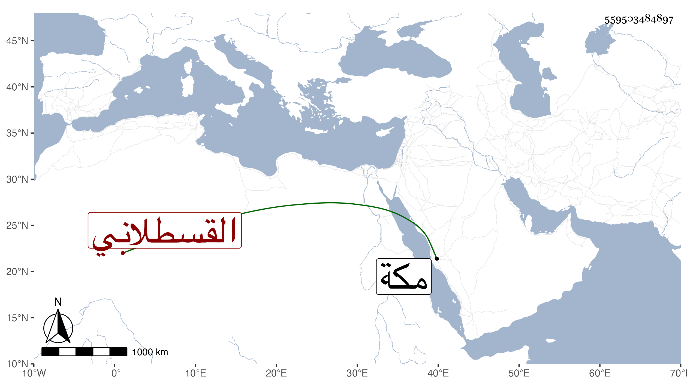

0902Sakhawi.DawLamic.ITO20230111-ara1.EIS1600.559503484897
Biography ID: 559503484897
628
فاطمة ابنة محمد بن أحمد بن حسن بن الزين محمد بن الامين محمد بن القطب القسطلاني وتكنى أم الامان . ولدت سنة تسع وتسعين وسبعمائة وأمها خديجة ابنة إبراهيم بن أحمد المرشدي ، واجاز لها عمر البالسني وابن قوام وعبد الله بن خليل الحرستاني وفاطمة ابنة ابن المنجا وفاطمة ابنة ابن عبد الهادي والزين المراغي وآخرون . وماتت في سنة اثنتين وثلاثين بمكة .
